arXiv 2611.04492 · cs.RO · 2026 年 11 月 3 日 · 中文精读
Hybrid Particle-Voxel Dynamics for Multimodal 3D World Simulation
作者 8 人：Jimmy Wang、Yifan Chou、Kaifeng Zhang、Yixuan Wang、Binghao Huang、Tao Yu、Saleh Nabi、Yunzhu Li。单位为哥伦比亚大学、加州大学伯克利分校、密歇根大学、NVIDIA 和 Analog Devices，通讯作者是 Yunzhu Li。
关于这份精读。这篇论文在 arXiv 上以 CC BY 4.0 发布，注明出处就可以转载、翻译和改编。本页按原文顺序覆盖正文五节和附录 A 到 D，小节编号与原文一致，可以对照 PDF 阅读。
公式按原文编号给出，表格数字照录原文。18 张插图直接取自原文 PDF，只做了裁切，图下的说明是本页写的。标成“读者注”的框是整理时核算或对照发现的问题，不属于论文内容，页尾有汇总。
机器人策略的训练、评测和规划，都需要预测“做了这个动作之后世界会变成什么样”。现在大多数动作条件世界模型是在 2D 图像或视频空间里预测的，没有显式表示背后的 3D 场景。这样一来，换个视角看是否一致、长时间交互后几何是否还对，都很难保证。
论文提出 3D World Simulator：从一个统一的 3D 表示同时预测外观、几何和触觉。它分两部分。第一部分是粒子-体素混合自编码器，把点云压成紧凑的 3D 体素潜变量，再解码回稠密粒子，每个粒子带一个可以渲染的 3D 高斯。第二部分是动作条件的 3D 潜空间动力学模型，预测这个体素潜变量下一步怎么变。结论有四条。
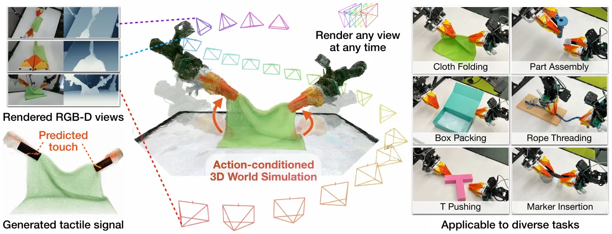
问题。预测 3D 世界怎样随交互演变，是智能机器人的基础能力，可以用来为策略训练生成数据、评测策略、做基于模型的规划，也可以作为世界动作模型的骨干。现有的动作条件世界模型主要建在 2D 视频生成模型上。它们能生成逼真的画面，但没有显式表示 3D 场景，所以很难保持跨视角的一致，也很难精确刻画接触和几何的空间关系。已有工作试过 3D 表示，但通常依赖很强的结构假设，比如针对特定物体的状态表示，或者显式的点对应关系。在复杂交互里，这些假设常常不可靠，也限制了适用范围。
方案。3D World Simulator 在统一的 3D 表示空间里做预测，用一个公共接口同时生成 3D 粒子、与之对齐的触觉信号，以及从新视角渲染的多视图一致画面。它支持 50 Hz 的交互式长时程多模态 3D 视频预测，在大规模数据上训练后能泛化到多样的物体和环境。技术上有两个组件：
3D 带来的好处。预测出的一个场景状态，就是多种能力共用的接口。外观建立在共享的 3D 高斯上，所以：(1) 渲染在几何上、视角间都一致，包括新视角和随手臂运动的腕部相机；(2) 可以自然地加入别的模态，触觉预测直接是 3D 粒子，和被接触的表面对齐；(3) 能和现有 3D 资产组合，比如静态背景、物体和运动学的机器人模型，从而对模拟画面有更多控制。
应用与贡献。论文在六个涉及刚体、铰接体和可变形物体的任务上展示交互式长时程多模态预测，好过最先进的 2D 视频和 3D 基线；用模拟器生成数据训练依赖视触觉和多视角观测的模仿学习策略；用模拟器评测策略，与真机评测强相关；在大规模多视角视触觉数据集 Deform360 上训练，好过 3D 基线，并能对未见过的物体和机械臂做零样本规划。贡献概括为三点：一个通用的动作条件多模态世界建模框架；统一 3D 表示空间里的粒子-体素混合动力学；一个支持策略训练、策略评测和规划的统一模型。
2D 动作条件视频模型。这类模型能预测逼真的未来画面，已经用在数据生成、策略评测、规划、动作预测、策略引导和策略改进上。但它们不显式表示 3D 世界，难以保证空间一致，也难以刻画复杂的物体交互。最接近本文的是同组的 Interactive World Simulator（IWS）：一个针对特定任务的 2D 动作条件视频模型，能做交互式、稳定、物理上合理的长时程模拟，但它只在像素空间预测，任意视角预测和空间一致性都是难点。本文显式表示 3D 场景，并且能准确模拟叠布、零件装配这类困难的交互。
3D 动力学模型。已有很多工作用各种 3D 表示建模物体动力学：点云、稀疏粒子、神经辐射场、3D 高斯和网格，有些专门针对弹塑性物体、布料或流体。最接近的是 PointWorld 和 PGND，它们在点或粒子空间训练 3D 世界模型，结果在空间上一致、物理上合理。但两者都要用点跟踪提供训练监督，也不关注逼真的 2D 渲染，而后者是训练和评测视觉运动策略所必需的。本文不需要点跟踪监督，能迁移到多样的场景，并支持从固定外部相机和运动的腕部相机做逼真渲染。
多模态世界模型。把触觉加进世界模型的工作，多数是在预测 2D 视觉图像的同时预测 2D 触觉图像。本文在 3D 空间里预测，空间上一致。RoboPack 也在 3D 空间里建模触觉和物体交互，用于密集装箱任务，但它的动力学模型主要针对装箱，预测时程也比较短。
先在 3.1 节给出问题形式，再在 3.2 和 3.3 节分别讲怎样训练自编码器和潜空间动力学模型，3.4 节讲怎样和其他 3D 资产组合，3.5 节讲推理时怎样自回归地展开。
时刻 \(t\) 的输入点云记为 \(P_t\in\mathbb{R}^{7\times n}\)，含 \(n\) 个视觉点，有触觉时也包括触觉点。每个点有 3 维世界坐标、3 维 RGB 颜色，外加 1 个留给触觉信息的通道。实验用的触觉传感器是 FlexiTac，但方法对传感器类型没有要求。目标是建一个模型，输入历史点云 \(P_{t-H:t}\) 和动作 \(a_t\)，预测下一步 \(\hat P_{t+1}\)，让它和真实的 \(P_{t+1}\) 尽量接近。
模型分两部分。自编码器里，编码器 \(E_\theta\) 把点云 \(P_t\) 压成紧凑的潜变量 \(z_t\)，解码器 \(D_\psi\) 再从它重建点云。潜空间动力学模型 \(F_\phi\) 输入当前潜变量 \(z_t\)、前 \(H\) 个历史潜变量 \(z_{t-H:t-1}\) 和动作 \(a_t\)，预测 \(\hat z_{t+1}=F_\phi(z_{t-H:t},a_t)\)。
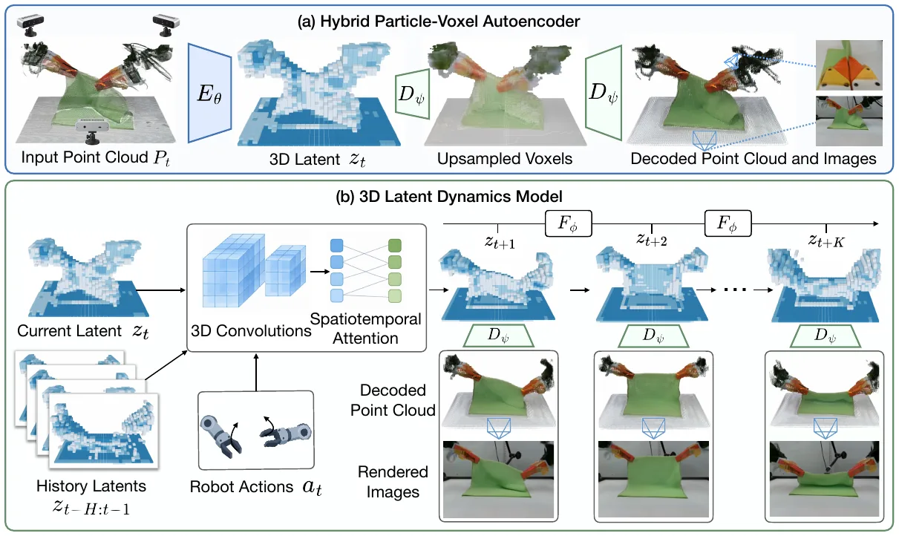
稀疏体素编码器。先把输入点云 \(P_t\) 体素化到一个稀疏 3D 网格上：落在同一个体素里的点取特征平均，只有被占据的体素才有特征。编码器 \(E_\theta\) 再用带步长的稀疏 3D 卷积逐级下采样，得到紧凑的潜变量 \(z_t\)，不在空的空间上浪费计算。每个潜变量体素沿通道维做单位归一化，然后再送进解码器或动力学模型。
由粗到细的粒子-体素解码器。解码器 \(D_\psi\) 分两段从 \(z_t\) 重建场景（图 2a）：
训练目标。自编码器端到端训练，损失为
各项的精确定义见附录 B.1。
自编码器训好之后，在它的 3D 潜空间上学动作条件的动力学模型 \(F_\phi\)（图 2b）。在时刻 \(t\)，给定输入潜变量 \(z_t\)、前 \(H\) 个历史潜变量 \(z_{t-H:t-1}\) 和动作 \(a_t\)，模型预测 \(\hat z_{t+1}=F_\phi(z_{t-H:t},a_t)\) 来逼近下一状态 \(z_{t+1}\)。预测出的潜变量可以解码成 3D 几何、多视角图像和触觉信号。
动力学模型是一个 3D U-Net。先用 3D 卷积下采样输入的潜变量体素，再交替做空间注意力和因果时间注意力，最后由解码器上采样回输入的潜变量分辨率。
训练目标。为了让长时程推理更稳，训练时就自回归地预测 \(K\) 步 \(\hat z_{t+1:t+K}\)，并用带折扣的损失监督：
\(\gamma\) 是折扣因子。训练采用课程，逐渐增大 \(K\)，思路类似 scheduled sampling。为了进一步稳定长时程推理，训练时还给每个历史潜变量加随机采样的高斯噪声。自编码器和动力学模型在一张 RTX 5090 上各训练约 16 小时。
式 (1) 的效果取决于 \(K\) 最后增大到多少，但正文和附录都没有给出最终的 \(K\)，也没有给课程怎样增加。附录 B.2 只给了 \(\gamma=0.95\)。按这个折扣，第 5 步的权重是 \(0.95^4\approx0.81\)，第 10 步是 0.63，第 20 步是 0.38，第 50 步只剩 0.08。所以 \(K\) 是 10 还是 50，训练对远端预测的约束差别很大。另外，附录说每次前向只预测 1 步，\(K\) 步是把预测接回历史、反复调用得到的。
模型只覆盖一个特定的工作空间。为了模拟更大的场景，可以把自编码器的原始输出和由 3D 高斯构成的各种静态背景组合起来。机械臂可能伸出工作空间之外，所以还可以用运动学的 3D 高斯机器人模型补全画面。模型本身不依赖物体级的表示，但可以微调成输出标签，把机械臂、物体和桌面分开。有了这种可分性，就能换上训练时没见过的机械臂和运动学模型，以及不同的背景。
推理时以开环方式自回归展开：从编码得到的初始潜变量 \(z_1\) 开始，动力学模型按动作预测下一个潜变量，再把预测结果作为下一步的输入。每个预测出的潜变量都能解码成视觉点云、触觉点云和 3D 高斯，后者可以从任意视角渲染。为了在开环展开时渲染腕部相机的画面，作者在解码器上微调了一个预测头。
摘要和图 1 都说模型能做 50 Hz 的交互式预测，但论文没有给出任何计时，包括动力学一步、解码和高斯渲染各要多久，也没说在什么硬件上测的。
数据的帧率也没有交代。附录 D.3 说策略示范是 10 Hz 记录的。表 1 的“长时程”是 200 步：如果每步是 1/50 秒，就是 4 秒；如果是 1/10 秒，就是 20 秒。作为参照，4.1 节说每个任务约 200 条轨迹、共 2 小时，平均一条 36 秒。所以 200 步可能只覆盖一条示范的九分之一，也可能覆盖一半多，论文里无法确定。
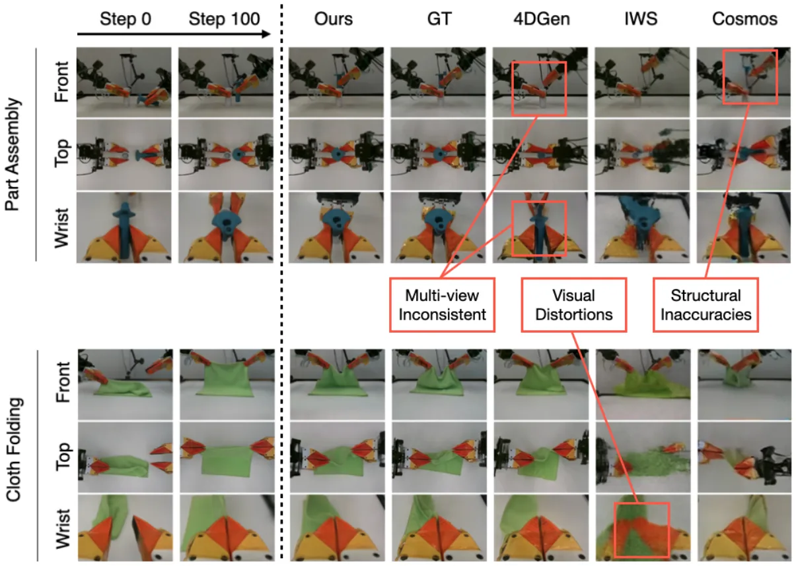
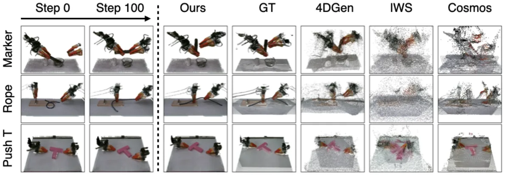
实验回答三个问题：(1) 在 3D 几何、多视角一致的渲染和触觉信号的长时程预测上，3D World Simulator 和基线比怎么样？(2) 能否用它训练和评测模仿学习策略，尤其是用腕部相机、触觉或多视角观测的策略？(3) 在大规模数据上训练后，能否从单个任务扩展到多样的物体和交互，并用于对未见物体和机械臂的规划？
ALOHA 任务。数据采集和实验用 ALOHA 双臂机器人，每个指尖装一个 FlexiTac 触觉传感器。六个任务覆盖可变形、刚性和铰接物体：零件装配、叠布、推 T、装箱、穿绳、插马克笔，详见附录 C。数据用运动学遥操设备加键盘采集，每个任务约 200 条轨迹、2 小时。
Deform360 数据集。为了检验可扩展性，用了 Deform360：一个视触觉数据集，有 198 种日常物体、1980 段交互、超过 215 小时的观测，来自 41 个环绕相机和双臂触觉夹爪。Deform360 只提供以物体为中心的深度，所以在它上面只用物体粒子训练，不像 ALOHA 那样重建机器人和周围环境。
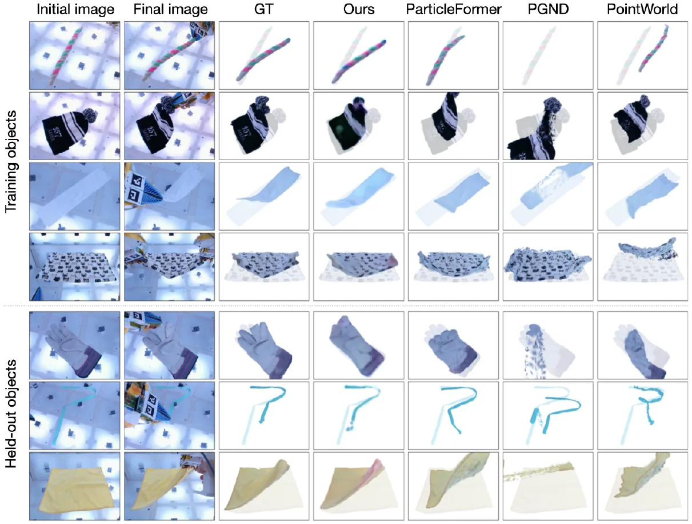
基线和指标。在六个 ALOHA 任务上，和 2D 视频预测基线、3D 粒子基线比较。指标覆盖像素重建（PSNR、LPIPS）、深度预测（Abs Rel 和 \(\delta<1.25\)）、点云重建（场景点和物体点的 Chamfer 距离）和触觉预测（L1）。长时程预测的指标在 200 帧的开环展开上取平均。在 Deform360 上只和 3D 粒子基线比较，因为数据集里没有每个视角的场景深度。
2D 视频基线是 Robot4DGen、Cosmos 和 IWS；3D 粒子基线是 ParticleFormer、PointWorld 和 PGND（Particle-Grid Neural Dynamics）。基线怎样改造见附录 C.3。
| 方法 | PSNR ↑ | LPIPS ↓ | Abs Rel ↓ | δ<1.25 ↑ | CD ↓ | 物体 CD ↓ | 触觉 L1 ↓ | |
|---|---|---|---|---|---|---|---|---|
| 视频 | Cosmos | 18.51 | 0.441 | 0.147 | 0.833 | 12.43 | 16.64 | 0.135 |
| Robot4DGen | 20.59 | 0.340 | 0.172 | 0.790 | 10.43 | 15.97 | 0.128 | |
| IWS | 12.59 | 0.562 | 0.163 | 0.791 | 10.81 | 17.69 | 0.207 | |
| 粒子 | PGND | – | – | – | – | 17.11 | 25.48 | 0.208 |
| PointWorld | – | – | – | – | 15.32 | 21.74 | 0.148 | |
| ParticleFormer | – | – | – | – | 13.78 | 20.23 | 0.151 | |
| 本方法 | 23.24 | 0.240 | 0.097 | 0.913 | 7.72 | 11.52 | 0.081 |
表 1 · 原文第 8 页。ALOHA 六个任务的定量对比，在 6 个任务上平均，并在 200 步的展开上平均。图像、深度两组只有视频基线能比。加底色的是每列最好的值。按表注的说法，粒子基线虽然用显式 3D，长时程下会退化，遮挡附近尤其明显。
ALOHA 结果。表 1 中本方法在所有指标上都好过所有基线。图 3 显示它在长时程下能给出多视角一致的渲染，而 2D 视频基线有视角间不一致、动力学不准和伪影累积的问题。图 4 显示基线预测的点云不一致。
第一，CD 没有单位。附录表 2 的 CD 标的是毫米，表 1 很可能也是，但没写。
第二，三个粒子基线都有触觉 L1，可附录 C.3 只说用 CoTracker 的点轨迹训练它们，没说它们怎样预测触觉值。视频基线的触觉是怎么来的也没有说明。
第三，一个值得注意的现象：三个视频基线的场景 CD 是 10.4 到 12.4，全部好过三个粒子基线的 13.8 到 17.1。视频基线的点云是从预测深度反投影出来的，图 4 里看起来噪点很多，但平均 Chamfer 距离反而更小。这和“显式 3D 的粒子基线长时程会退化”的说法一致，不过也说明 CD 这个指标对散乱噪点并不敏感。
Deform360 结果。表 2（在附录 A）显示，在训练见过的物体上，本方法的图像和几何指标都好过 3D 粒子基线。在留出的物体上，本方法几何预测更好，图像指标更差。作者的解释是，粒子基线是在预先拟合好的高斯泼溅上输出点轨迹，而本方法是从头生成外观。图 5 显示，本方法对见过和没见过的物体都能生成逼真的动力学和外观。
这一节检验 3D World Simulator 能否作为可扩展的数据生成器，特别是为依赖腕部相机、触觉，或采集时根本没有相机的新视角的策略生成数据。评测四种模仿学习策略：ACT、Diffusion Policy（DP）、π0.5 和 Cosmos Policy。任务有三个：零件装配、叠布、推 T。每个任务在真机上采 100 条示范，在模拟器里也采 100 条，报告四种策略的平均成功率。
每个任务考模拟器的一种能力。零件装配考视触觉策略的训练，推 T 考从新视角学策略，叠布考前视加腕部相机的多视角一致性。图 6 中，用模拟的视触觉数据训练的零件装配策略，成绩和用真实数据训练的相当，并且远好过只用视觉、用真实数据训练的策略，说明模型生成的触觉信号有用。叠布和推 T 的结果说明模拟器对多视角和新视角观测也有用。
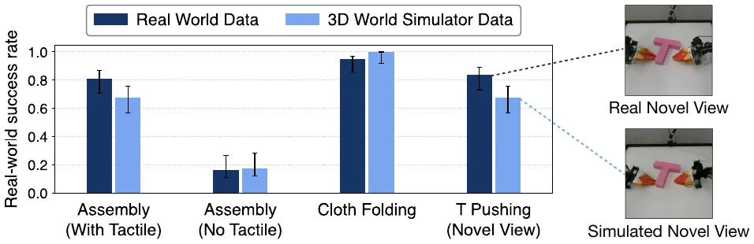
从 PDF 里的原图按像素量柱高，八根柱子是 0.813、0.675、0.163、0.175、0.950、1.000、0.838、0.675。它们都正好是 1/80 的整数倍：65、54、13、14、76、80、67、54。这和“4 种策略、每种在真机上试 20 次”对得上，不过图 6 的试验次数论文只在 4.4 节对图 7 说过。
按每根柱 80 次独立试验做双侧 Fisher 精确检验：零件装配 65 对 54，p ≈ 0.07；推 T 67 对 54，p ≈ 0.03；叠布 76 对 80，p ≈ 0.12。所以零件装配的“相当”勉强成立，推 T 的差距在统计上是显著的。
附录 D.2 把推 T 成绩偏低归因于“新视角本身比俯视更难”，而不是渲染。但图 6 里真实数据训练的策略用的是同一个新视角，成功率 0.84。视角难度对两根柱子是一样的，解释不了 0.84 和 0.68 之间的差距，这个差距更可能来自模拟画面和真实画面的差别。图中的误差棒是怎么算的也没有说明。
论文说“在 3D World Simulator 里也采 100 条示范”，但没有说动作从哪来：是人在模拟器里遥操，是重放真实示范的动作序列，还是别的方式。如果是重放真实动作，模拟数据和真实数据就是同一批轨迹的两种渲染，比较的其实是观测的真实度；如果是在模拟器里重新遥操，比较的还包括示范本身的差异。两种情况的含义不一样。
同样，4.4 节在模拟器里评测策略时，成功怎么判定也没有说明。附录 D.1 的标准，比如插头插进插座、掩码 IoU 超过 0.6，在模拟器里分别怎样实现，论文没有交代。
为了检验 3D World Simulator 能否替代真机评测，作者看同一批策略在模拟器和真机上的成绩是否正相关。训练 ACT、DP、π0.5、Cosmos Policy 四种策略，任务同 4.3 节，每个任务采样 20 个初始配置。图 7 显示，三个任务、四种策略下，真机成绩和模拟器成绩高度相关。横轴是真机成功率，纵轴是模拟器里的成功率。每个点是一种策略在某个训练步的检查点，颜色区分策略类型。误差棒是 Clopper-Pearson 置信区间，模拟和真机每个点都各评测 20 次。
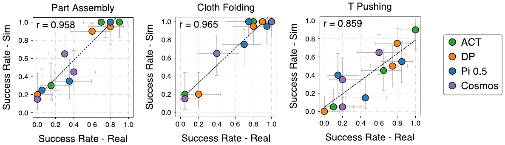
图 7 是矢量图，可以从 PDF 里直接取出每个点的坐标。每个任务 12 个点，每种策略 3 个检查点，坐标全部落在 1/20 的整数倍上，和每点 20 次试验一致。推 T 有一个 DP 点在 (0, 0)，被坐标轴遮住了一半，容易数漏。
| 任务 | ACT | DP | π0.5 | Cosmos |
|---|---|---|---|---|
| 零件装配 | .15/.30 · .70/1 · .90/1 | 0/.20 · .60/.90 · .80/.95 | .05/.25 · .35/.35 · .80/1 | 0/.15 · .30/.65 · .40/.45 |
| 叠布 | .05/.20 · .80/1 · 1/1 | .20/.20 · .80/.95 · .90/1 | .70/.75 · .75/1 · .95/.95 | .05/.15 · .40/.65 · 1/1 |
| 推 T | .10/.05 · .65/.45 · 1/.90 | 0/0 · .75/.50 · .80/.75 | .15/.40 · .45/.15 · .85/.55 | .20/.05 · .20/.35 · .60/.65 |
每格三个检查点，写作“真机 / 模拟”。
用这些点复算 Pearson r，得到 0.956、0.964、0.859，和图上的 0.958、0.965、0.859 基本一致。再看几个图上没说的方面：
图 7 里每种策略在零件装配上真机成绩最好的检查点分别是 ACT 0.90、DP 0.80、π0.5 0.80、Cosmos 0.40，平均 0.725。图 6 里用真实数据训练的零件装配平均成绩却是 0.81。推 T 和叠布对应的两组数是 0.81 对 0.84、0.96 对 0.95，也不完全一致。所以图 6 和图 7 用的不是同一批训练结果，或者不是取每种策略最好的检查点。图 7 的策略是用真实数据还是模拟数据训练的，论文也没有说。
把在 Deform360 上预训练好的模型用于下游规划。实验用一套训练时没见过的 ALOHA 单臂设置，加四个没见过的物体：布、绳子、泡沫块和树懒玩偶。规划用模型预测控制，具体是 PGND 里现成的 MPPI 实现。图 8 从定性和定量两方面说明，预训练模型可以零样本完成规划。
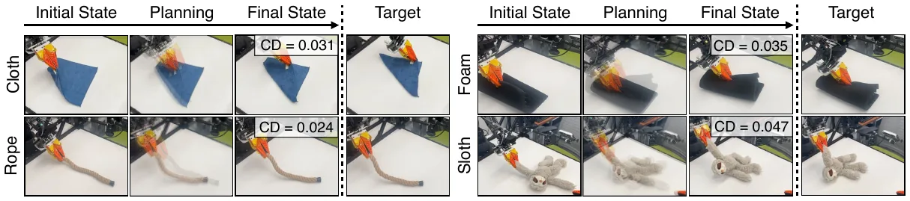
图 8 每个物体只有一次规划，给的是最终状态和目标之间的一个 CD 值。这个 CD 没有单位：表 2 的 CD 单位是毫米、数值在 10 左右，图 8 的 0.024 到 0.047 显然不是同一单位，可能是米，也就是 2.4 到 4.7 厘米。另外没有成功标准，没有多次试验，也没有和其他模型（比如 PGND 自己）对比。所以这一节能说明“可以用来规划”，但说明不了规划得多好。
论文提出 3D World Simulator，一个在统一 3D 表示空间里预测的动作条件多模态世界建模框架，用一个公共接口生成 3D 粒子、多视角一致的 RGB 渲染和触觉预测。这个统一模型支持多种应用：为视触觉策略、依赖多视角、新视角和腕部相机的策略生成训练数据；评测这些策略，模拟与真机结果强相关；在大规模数据上训练后，对未见物体和机器人配置做基于模型的规划。今后计划扩展到更多样、更有挑战的环境，以及多房间场景和移动操作等更大规模的场景。
致谢中列出的资助来自 Analog Devices、丰田研究院和美国国家科学基金会（NSF 2409661）。
| 方法 | 训练物体 | 留出物体 | ||||
|---|---|---|---|---|---|---|
| PSNR ↑ | LPIPS ↓ | CD (mm) ↓ | PSNR ↑ | LPIPS ↓ | CD (mm) ↓ | |
| PGND | 14.9 | 0.41 | 18.6 | 12.3 | 0.50 | 25.2 |
| PointWorld | 16.8 | 0.34 | 12.4 | 15.0 | 0.58 | 14.5 |
| ParticleFormer | 18.0 | 0.30 | 10.5 | 15.6 | 0.31 | 13.4 |
| 本方法 | 18.6 | 0.26 | 9.6 | 14.8 | 0.43 | 12.1 |
表 2 · 原文第 16 页。Deform360 上的定量对比，在 150 步开环展开上平均。加底色的是每列最好的值。见过的物体上本方法各项都最好；留出物体上几何仍最好，渲染质量较差。
留出物体上，本方法的 PSNR 14.8 低于 ParticleFormer 的 15.6 和 PointWorld 的 15.0，LPIPS 0.43 也比 ParticleFormer 的 0.31 差得多，只有 CD 最好。表注把这个结果写成“This advantage can be explained by...”，按上下文应该是劣势。
作者给的解释是粒子基线在预先拟合好的高斯泼溅上移动点，外观是从数据里拿来的，而本方法要从头生成外观。这个解释说得通，但也说明在这个对比里，粒子基线在外观上拿到了额外的信息，两边的条件并不完全相同。另外，表 2 是在 150 步上平均，表 1 是 200 步，两张表的数字不能直接对比。
下面给出自编码器和动力学模型在 ALOHA 数据集和 Deform360 数据集上的细节。
表示。ALOHA 的观测是裁剪后的操作空间，包括机器人、物体，有触觉时还包括触觉点。Deform360 的观测是物体点云。所有位置在体素化之前都变换到同一个坐标系。两个数据集的编码器都输出 8 通道的潜变量网格。
| 设置 | ALOHA | Deform360 |
|---|---|---|
| 潜变量网格 (X, Y, Z) | 32 × 16 × 32 | 32 × 32 × 32 |
| 潜变量通道数 | 8 | 8 |
| 工作空间尺寸 (X, Y, Z)，米 | 0.52 × 0.32 × 0.28 | 0.515 × 0.525 × 0.38 |
| 稀疏编码器宽度 | 8, 16, 32, 64 | 8, 16, 32, 64 |
| 体素解码器宽度 | 256, 128, 64 | 320, 160, 80 |
| 粒子头隐藏宽度 | 64 | 64 |
| 粒子细化阶段数 | 2 | 2 |
| 高斯尺度 | 各向异性 | 各向异性 |
| 球谐阶数 | 1 | 1 |
| 触觉监督 | 开启 | 关闭 |
| 最大输入点数 | 300,000 | 50,000 |
| 每进程批大小 | 1 | 1 |
| 初始学习率 | 2 × 10⁻⁴ | 2 × 10⁻⁴ |
| 最小学习率 | 10⁻⁵ | 10⁻⁵ |
| 权重衰减 | 10⁻⁴ | 10⁻⁴ |
| 潜变量噪声标准差 | 0.1 | 0.1 |
| 一致性系数 | 100 | 100 |
| KL 正则 | 关闭 | 关闭 |
表 3 · 原文第 17 页。两个数据集上自编码器的精确配置。
ALOHA 的潜变量是 32 × 16 × 32 × 8 = 131,072 个数，Deform360 是 32³ × 8 = 262,144 个数。按表 3 的工作空间尺寸，ALOHA 一个潜变量体素是 0.52/32 × 0.32/16 × 0.28/32 米，也就是 16.25 × 20 × 8.75 毫米，三个方向并不相同，竖直方向最细。Deform360 是 16.1 × 16.4 × 11.9 毫米。
动力学模型的注意力在下采样两次之后做：ALOHA 是 8 × 4 × 8 = 256 个空间 token，Deform360 是 8³ = 512 个，每个 token 对应 4 × 4 × 4 个潜变量体素，ALOHA 上约 6.5 × 8 × 3.5 厘米。5 帧历史加 1 个预测槽，每次前向一共 6 × 256 = 1536 个 token。
论文没有给的是：输入体素化的分辨率（编码器有 4 个宽度，可能对应 3 次下采样，但没写），解码器三级占据各是什么分辨率，以及稠密潜变量网格里没被占据的格子填的是什么。
解码器。体素解码器在三个分辨率上预测占据，在最细的分辨率上预测颜色。被占据的体素作为种子，进入两个连续的粒子细化阶段。粒子头预测连续位置和高斯渲染属性，主要是各向异性高斯和一阶球谐系数。
体素监督。每一级解码分辨率上用二元交叉熵监督占据。体素 RGB 在被占据的格子上用 \(\ell_1\) 监督，触觉粒子和视觉粒子都算在内。
有触觉观测时，还用二元交叉熵监督触觉占据，在触觉占据的格子上用 \(\ell_1\) 监督触觉信号值；没有触觉监督时省去这些项。空间加权会突出物体和接触区域。
粒子监督。对每个被占据的种子体素，记 \(\hat P\) 为它预测的粒子，\(P\) 为它局部体素邻域内的真实点。用局部双向 Chamfer 距离：
这个目标在有效的种子邻域上取平均，两个粒子细化阶段都用；邻域里没有真实点的不参与这一项。颜色监督时，把每个真实点分给邻域内最近的预测粒子，分到的真实点颜色的平均值作为这个粒子的 \(\ell_1\) 目标。粒子损失合起来是
\(r\) 遍历两个细化阶段。
渲染监督。对训练相机 \(j\)，预测的高斯渲染出 RGB 图 \(\hat I_j\)、深度 \(\hat D_j\) 和不透明度。渲染损失为
其中
图像损失在所有受监督的相机视角上累加。取 \(\lambda_{\mathrm{RGB}}=4\)，\(\lambda_{\mathrm{SSIM}}=0.5\)。
子采样一致性。对同一观测独立采样两份点云，用同一组权重编码，最小化
\(\Omega_t\) 是被占据的潜变量格子，\(c\) 是通道数。用颜色增强时，两份子采样做同样的颜色变换，所以一致性项不会鼓励模型对物体外观不敏感。表 3 里一致性系数是 100。
训练阶段。参考配方先训练体素自编码器 10 个 epoch；接下来 10 个 epoch 冻结体素自编码器，只训练粒子头和渲染头；之后自编码器和粒子头联合优化。
逐帧空间编码器。观测历史有 \(H\) 个潜变量网格，含最新一帧：\(z_{t-H+1},\ldots,z_t\)。一个共享的 3D 卷积编码器独立处理每一帧，保留显式的时间维。两个空间下采样阶段分别得到潜变量网格 1/2 和 1/4 分辨率的特征。
动作条件。每个观测帧配上对应的机器人状态或动作描述；一个未来查询槽以所请求预测步的动作为条件。一个 MLP 把动作、相对时间戳和历史噪声水平嵌入，并注入各个特征块。在 Deform360 上，动作描述包括每个夹爪的 3D 位置、6D 旋转表示、开合度和是否存在的标志，位置和朝向与物体潜变量在同一坐标系。在 ALOHA 上，描述由机器人运动学和夹爪状态得到。还可以给每帧拼接 4 个空间动作通道：每个夹爪一个位置热图和一个按开合度调制的热图。未来查询使用目标动作的空间通道；不存在的夹爪对应全零通道。
分解的时空注意力。在最粗的分辨率上，模型交替做空间注意力和时间注意力。空间注意力作用于一帧内的所有粗体素：
时间注意力再在每个粗空间位置上跨帧槽进行：
每个注意力块都带残差前馈网络，空间位置和时间偏移都显式编码。未来查询可以看所有观测帧，但永远看不到未来的真实潜变量特征。对 32³ 的潜变量，注意力作用在每帧 8³ = 512 个空间 token 上，不必在全部 32³ 个细网格位置上做注意力；ALOHA 网格对应的粗网格是 8 × 4 × 8。
解码器和跳连。一个共享的 3D 解码器把注意力特征上采样回原潜变量分辨率。预测槽的跳连特征取自最近一个可用的历史帧；开环预测时，这一帧本身可能就是模型之前的预测。跳连路径里不会用到未来的真实特征。输出直接就是潜变量预测，每预测一步只需调用一次网络。
| 设置 | ALOHA | Deform360 |
|---|---|---|
| 潜变量网格 | 32 × 16 × 32 | 32³ |
| 潜变量通道数 | 8 | 8 |
| 历史帧数 | 5 | 5 |
| 编码器宽度 | 128, 256, 512 | 128, 256, 512 |
| 卷积核 | 3³ | 3³ |
| 空间下采样阶段数 | 2 | 2 |
| 注意力网格 | 8 × 4 × 8 | 8³ |
| 时空块对数 | 4 | 4 |
| 注意力头数 | 8 | 8 |
| 每头维度 | 64 | 64 |
| 前馈扩展倍数 | 2 | 2 |
| 动作嵌入维度 | 512 | 512 |
| 每次前向的预测步数 | 1 | 1 |
| 优化器 | AdamW | AdamW |
| 权重衰减 | 10⁻⁴ | 10⁻⁴ |
| 梯度裁剪 | 10 | 10 |
| 历史噪声最大标准差 | 0.4 | 0.4 |
| 展开折扣 γ | 0.95 | 0.95 |
表 4 · 原文第 19 页。3D 潜空间动力学模型的配置。
自回归训练。先用冻结的自编码器预先算好潜变量序列。每个训练样本从观测历史开始：模型预测一个未来潜变量，把它接到历史末尾，去掉最老的一帧，如此重复。真实的未来潜变量只用作损失的目标。用 \(K\) 表示受监督的预测步数，\(K=1\) 就是只训练下一帧，这样就不会和只数额外反馈步数的实现混淆。受监督的各步用 \(\gamma=0.95\) 折扣，定义见 3.3 节。对每个历史帧，采样 \(\sigma_\tau\sim\mathcal{U}(0,\sigma_{\max})\)，令
网络把 \(\sigma_\tau\) 作为条件输入。
3.2 节说每个潜变量体素沿通道做了单位归一化，也就是 8 维向量的长度是 1，每个通道的均方根约为 \(1/\sqrt8\approx0.354\)。式 (10) 的噪声是逐通道独立的，\(\sigma_{\max}=0.4\)。在最大噪声下，噪声的单通道标准差已经超过信号的单通道均方根，噪声向量长度约为 \(0.4\sqrt8\approx1.13\)，比信号本身还长。
由于 \(\sigma_\tau\) 是在 0 到 0.4 之间均匀采样的，这个强度只出现在一部分样本上。它说明作者为了长时程稳定，主动让模型学会面对噪声很重的历史，这也是模型要以 \(\sigma_\tau\) 为条件的原因。作为对照，自编码器里的潜变量噪声是 0.1，对应噪声向量长度约 0.28。这里假设噪声加在归一化之后的潜变量上，论文没有明说。
相机。三台静态的 RealSense D455 双目相机，一台俯视，两台从工作空间两侧朝前；另外每条手臂上装一台腕部 RealSense D405。
数据处理。每台相机的双目图像先用 FoundationStereo 算深度，再反投影到世界坐标系得到点云。触觉粒子的位置用 ALOHA 关节角做正运动学，算出触觉垫的位置。最后用手工设定的工作空间包围盒裁剪点云。
下面六张图是六个任务的开环展开。每张图五列是第 0、50、100、150、200 步，四行是点云、俯视、前视和后视渲染。
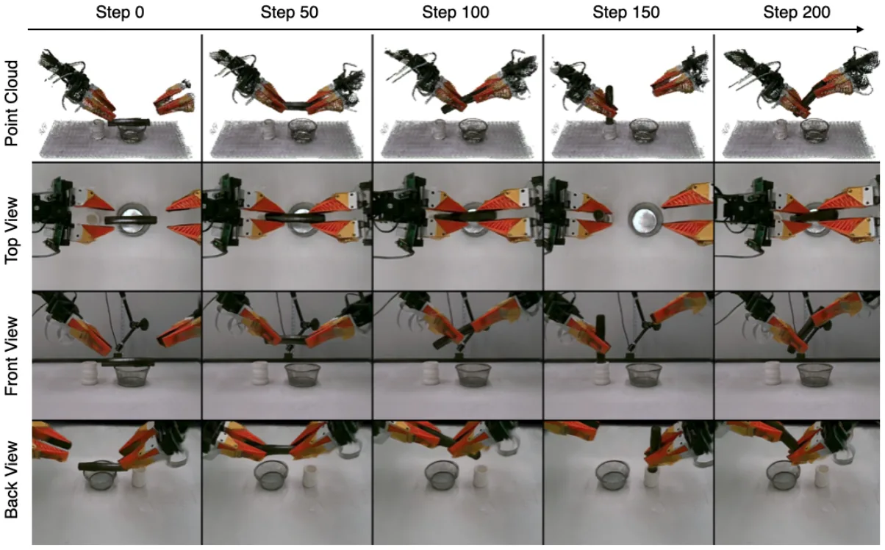
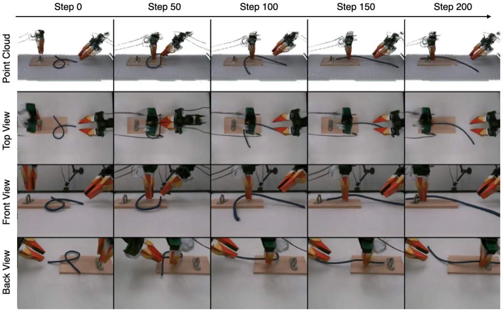
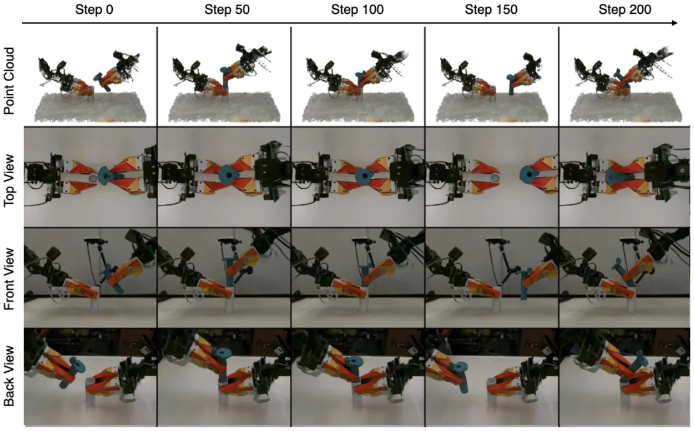
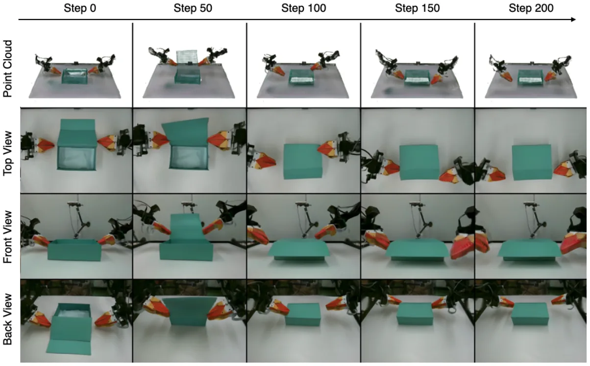
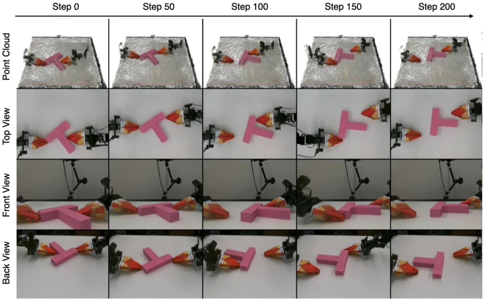
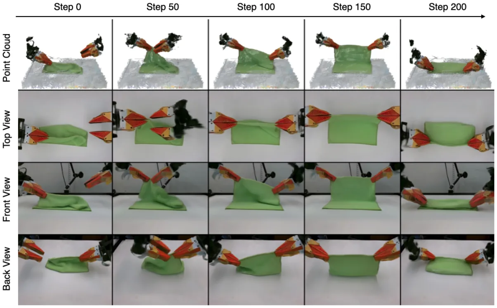
为了让 Cosmos 能预测深度、渲染多视角，按其指南把四个视角拼成一张图，再加上映射到 RGB 空间的深度。IWS 改成在 RGB 之外也预测深度，并按其训练指南为每个视角拼接一个潜变量。Robot4DGen 本来就是 3D 感知的、支持多视角渲染，按原配方训练。3D 粒子基线用 CoTracker 为每个物体和场景点提供点轨迹来训练。
零件装配：插头成功插进插座算成功。叠布：没抓到布边算失败；抓到布边且掩码 IoU 高于 0.6 算成功。推 T：掩码 IoU 高于 0.60 算成功。
零件装配。策略只看右腕相机，插座在左手里被严重遮挡，所以能否插进去取决于腕部相机观测和触觉反馈都要准。
推 T。使用一个世界模型训练时没见过的新视角。作者认为成绩略低，多半是因为这个新视角本身比俯视更难完成任务，而不是渲染的问题（参见读者注 4）。
叠布。策略要沿布边滑动，而这段布边在前视相机里看不到，体现多视角观测的用处。
在叠布、零件装配、推 T 三个任务上训练 ACT、DP、π0.5 和 Cosmos。每个任务 100 条示范，以 10 Hz 记录，90 条训练、10 条留出。叠布用前视和腕部相机，零件装配用腕部相机加触觉，推 T 用单个新视角相机。真实图像经过颜色校正、裁剪和缩放，以匹配对应的模拟观测。ACT 和 DP 输入 128 × 128 的图像，π0.5 和 Cosmos 输入 224 × 224。
零件装配的触觉观测是 4 块 12 × 32 的触觉垫。归一化前加一个小的死区，训练时做少量触觉增强；叠布和推 T 不用触觉输入。ACT 和 DP 用批大小 64 训练 30,000 步，π0.5 用批大小 8 训练 30,000 步。ACT 每次预测 30 个动作块，DP 预测 16 步，π0.5 预测 30 个动作块。ACT 用 ImageNet 初始化的 ResNet-18 视觉编码器加 Transformer 策略；DP 用 ResNet-18 视觉编码器加条件时序 U-Net 扩散模型；π0.5 用 LoRA 微调；Cosmos 从 Cosmos-Policy-ALOHA-Predict2-2B 初始化。图像增强用随机颜色抖动、随机裁剪和模糊；零件装配的触觉增强用稀疏噪声、dropout 和高斯噪声。
| ACT | DP | π0.5 | Cosmos Policy | |
|---|---|---|---|---|
| 输入分辨率 | 128² | 128² | 224² | 224² |
| 观测历史 | 1 | 2 | 1 | 1 |
| 动作时域 | 30 | 16 | 30 | 30 |
| 批大小 | 64 | 64 | 8 | 192 |
| 学习率 | 10⁻⁵ | 10⁻⁴ | 2.5 × 10⁻⁵ | 10⁻⁴ |
| 优化器 | AdamW | Adam | AdamW | AdamW |
| 训练步数 | 30k | 30k | 30k | 10k |
表 5 · 原文第 24 页。策略训练配置。
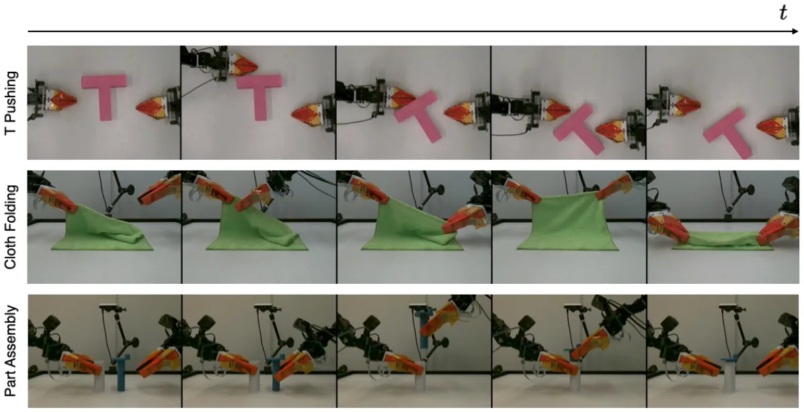
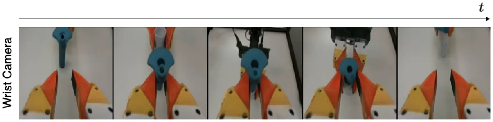
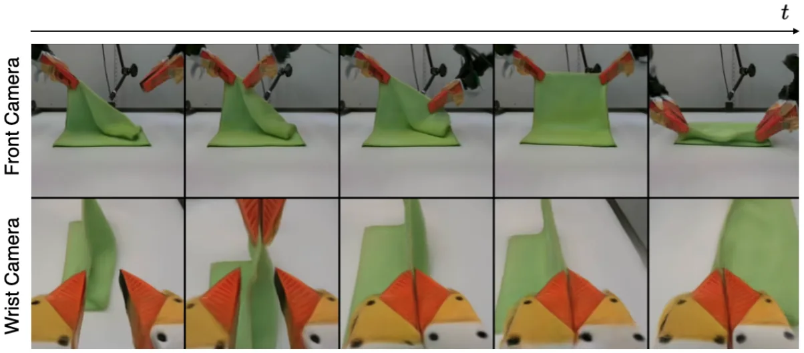
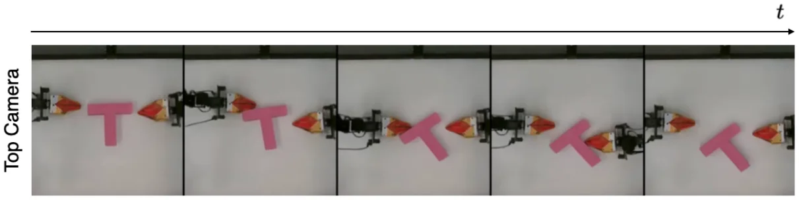
以下各条都是本页加的核算或对照，不属于论文内容。点标题跳到对应位置。
文中提到的模型、数据集、传感器和工具。名字链接到主页，没有主页的链接到论文；所有链接在 2026 年 11 月 5 日核对过可以打开。
| 名称 | 是什么 | 主页 | 论文 |
|---|---|---|---|
| 3D World Simulator | 本文 | jwang771.github.io/3dworldsimulator | 2611.04492 |
| 3d-world-simulator | 本文代码 | github.com/jwang771/3d-world-simulator | – |
| Deform360 | 大规模多视角视触觉数据集，198 种物体 | – | 2607.05390 |
| ALOHA / ACT | 低成本双臂机器人和动作分块策略 | tonyzhaozh.github.io/aloha | 2304.13705 |
| FlexiTac | 低成本开源触觉传感器 | – | 2604.28156 |
| 3D-ViTac | 把触觉表示成 3D 点的视触觉策略 | – | 2410.24091 |
| IWS | Interactive World Simulator，2D 视频基线 | – | 2603.08546 |
| Robot4DGen | 几何感知的 4D 视频生成，视频基线 | – | 2507.01099 |
| Cosmos | NVIDIA 世界基础模型，视频基线 | github.com/nvidia-cosmos | 2501.03575 |
| PGND | 粒子-网格神经动力学，粒子基线，规划用的 MPPI 也来自它 | kywind.github.io/pgnd | 2506.15680 |
| PointWorld | 大规模 3D 点云世界模型，粒子基线 | – | 2601.03782 |
| ParticleFormer | 多物体多材质的点云世界模型，粒子基线 | – | 2506.23126 |
| RoboPack | 3D 空间里的触觉动力学，用于装箱 | – | 2407.01418 |
| Diffusion Policy | 扩散模型策略 | diffusion-policy.cs.columbia.edu | 2303.04137 |
| π0.5 | 视觉-语言-动作模型 | physicalintelligence.company | 2504.16054 |
| Cosmos Policy | 由视频模型微调的策略 | research.nvidia.com | 2601.16163 |
| 3D Gaussian Splatting | 粒子渲染用的 3D 高斯表示 | repo-sam.inria.fr | 2308.04079 |
| FoundationStereo | 零样本双目深度估计，用来得到点云 | github.com/NVlabs/FoundationStereo | 2501.09898 |
| CoTracker | 点跟踪，用来给粒子基线做监督 | co-tracker.github.io | 2307.07635 |
| 3D U-Net | 动力学模型的骨架 | – | 1606.06650 |
| 稀疏卷积 | 编码器用的子流形稀疏卷积 | – | 1711.10275 |
| TimeSformer | 分解的时空注意力 | – | 2102.05095 |
| SIMPLER | 本站的另一篇精读，同样讨论仿真评测和真机成绩的相关性 | 本站 | 2405.05941 |